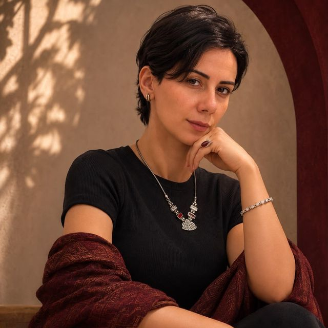
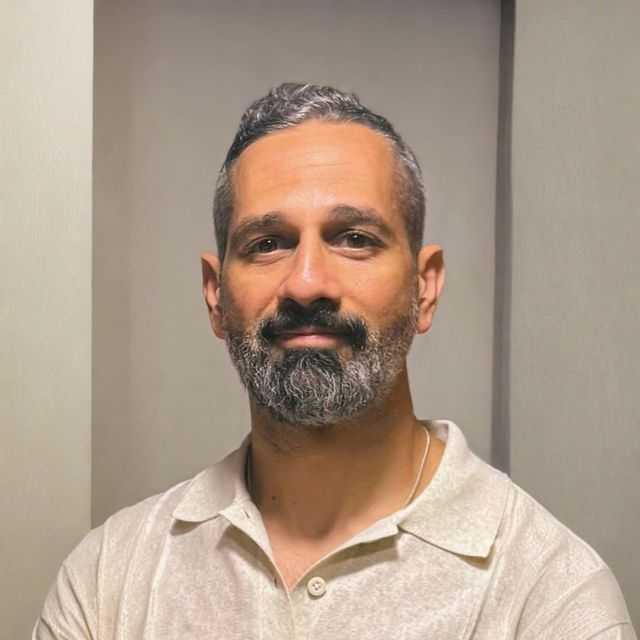

ما وراء الرغبة
Beyond the Urgeمن الاندفاع للاختيار الواعي
ساعات بيجيلك اندفاع قوي، لحاجة تسكّت اللي جواك، وقبل ما تاخد بالك بتلاقي نفسك كرّرت نفس التصرف. في الرحلة دي هنفهم إيه اللي بيحصل في اللحظة دي، ونتدرّب على إن يبقى عندنا مساحة نختار فيها.
- ٤ لقاءات، ساعة ونص
- كل يوم اتنين
- أونلاين ومباشر
- بالمصري
- أماكن محدودة
Beyond the Urge
ما وراء الرغبةFrom compulsion to conscious choice
Sometimes a strong urge rises, reaching for anything that will quiet what’s inside, and before you notice, you’ve repeated the same pattern again. In this journey we explore what happens in that moment, and practise creating a space where choice becomes possible.
- 4 sessions · 90 minutes
- Every Monday
- Live online
- In Egyptian Arabic
- Limited places
إمتى الرغبة بتاخد مساحة أكبر من اختيارك؟
ممكن تلاحظ إن الاندفاع بيزيد لما تكون مضغوط، زهقان، أو حاسس بالوحدة. ساعات بيظهر في سكرول مش بيخلص، أو أكل من غير جوع، أو تعلّق بشخص أو باستحسان الناس، وساعات في الإثارة الجنسية أو البورن. الشكل بيختلف، لكن السؤال واحد: أنا فعلًا محتاج إيه؟
When does the urge take up more space than your choice?
You might notice the pull grows stronger when you’re stressed, bored or lonely. Sometimes it shows up as endless scrolling, eating without hunger, clinging to a person or to other people’s approval, and sometimes as sexual stimulation or porn. The form changes, but the question stays the same: what do I truly need?
- بعد يوم طويل ومرهق، والدماغ مش عايزة تسكت.
- في لحظة وحدة أو رفض، حتى لو محدش واخد باله.
- لما تكون زهقان، والإيد بتروح لوحدها لنفس الطريق.
- After a long, draining day, when your mind won’t settle.
- In a quiet moment of loneliness or rejection, even if no one else notices.
- When boredom creeps in and your hand reaches for the same path on its own.
هنبدأ بسؤال بسيط: إيه اللي كان بيحصل جوايا وفي يومي قبل ما أتصرف؟
We begin with one simple question: what was happening inside me, and in my day, just before I acted?
إيه هي رحلة ما وراء الرغبة؟
رحلة جماعية للكبار، فيها شرح بسيط وتمارين وعي بالجسم وتأمل شخصي وتطبيق بين اللقاءات. هنقرّب من علاقتنا بالرغبة والاندفاع والتعلّق بأشكالهم المختلفة، والرغبات الجنسية جزء من الكلام ده، جنب التشتّت، واللجوء للموبايل أو الأكل وقت الضغط، والتعلّق بالناس.
هنختار موقف من الحياة اليومية، ونلاحظ إشارات الجسم والأفكار اللي بتسبق الاندفاع، ونجرب وقفة قصيرة قبل ما نقرر نعمل إيه. كل واحد يقدر يحتفظ بتفاصيل الموقف لنفسه.
الحرية مش إني مبقاش بحس بالرغبة. الحرية إني أحس بيها، وأفضل قادر أختار هعمل إيه.
What is Beyond the Urge?
A small group journey for adults, woven from simple teaching, body-awareness practices, personal reflection and gentle practice between sessions. We’ll come closer to our relationship with desire, impulse and attachment in their many forms. Sexual desire is part of that conversation, alongside distraction, reaching for the phone or food under pressure, and attachment to people.
We’ll take an everyday moment, notice the body signals and thoughts that come before the urge, and try a short pause before deciding what to do. Everyone keeps the details of their own story to themselves.
Freedom isn’t no longer feeling the urge. Freedom is feeling it, and still being able to choose.
رحلة بخطوات هادية
كل أسبوع بيبني على اللي قبله، من إنك تشوف النمط، لحد ما تعيش اختيار جديد في يومك.
A journey in gentle steps
Each week builds on the one before, from seeing the pattern to living a new choice in your everyday life.
-
Awareness
أشوف النمطSeeing the pattern
الاتنين ١٦ نوفمبرMonday 16 Novemberهنرسم خريطة لموقف بيتكرر. إيه اللي حصل قبله، حسّيت بإيه، عملت إيه، وإيه اللي كنت بتدور عليه وقتها؟
We map a moment that keeps repeating. What happened before it, what did you feel, what did you do, and what were you really reaching for?
-
Regulation
أتعامل مع اللي حاسس بيهStaying with what I feel
الاتنين ٢٣ نوفمبرMonday 23 Novemberهنجرّب وقفة بسيطة، زي إننا نحس برجلينا على الأرض ونلاحظ اللي حوالينا، ونشوف إيه اللي يساعد كل واحد فينا يرجع للحظة.
We practise a simple pause, feeling our feet on the ground and noticing what’s around us, and discover what helps each of us return to the present.
-
Deconditioning
أجرّب رد مختلفTrying a different response
الاتنين ٣٠ نوفمبرMonday 30 Novemberهنختار لحظة متكررة ونحضّر ليها خطوة عملية. لو لاحظت الإشارة دي، إيه التصرف اللي أقدر أجرّبه ويكون أقرب للي محتاجه؟
We choose a recurring moment and prepare one practical step. When I notice this signal, what could I try that’s closer to what I actually need?
-
Embodiment
أعيش اختياريLiving my choice
الاتنين ٧ ديسمبرMonday 7 Decemberهتجمع الأدوات اللي نفعت معاك في خطة بسيطة تستخدمها في حياتك، وفيها خطوة ترجع بيها للممارسة لو لقيت نفسك رجعت لنفس النمط.
You’ll gather the tools that worked for you into a simple plan for daily life, including a way back to practice if you find yourself in the old pattern again.
ندا وميناNada & Mina

ندا سالمNada Salem
مرشدة نفسية روحية، ومهندسة السلطة الداخليةPsycho-Spiritual Guide & Inner Authority Architectبتجمع ندا بين العلوم الأساسية وفنون الشفاء والإدراك الروحي المباشر، وبترافق بهدوء اللي جاهزين فعلًا إنهم يرجعوا لانسجامهم مع جوهرهم ورسالتهم.
Integrating basic sciences, healing arts, and direct spiritual perception, Nada gently guides those who are truly ready into alignment with their essence and purpose.

مينا ميخائيلMina Mikhail
كوتش نفسي روحي، متخصص في الطاقة الذكورية والتجسيدPsycho-Spiritual Coach · Masculine & Embodiment Workمدرّب معتمد في فنون وعلوم الوعي بالذات والتعبير، وبيحتضن مينا مساحات آمنة بتفتح الباب للشفاء والتحوّل والعيش بوعي.
A certified trainer in the arts and sciences of self-awareness and expression, Mina holds safe, transformative spaces for healing and conscious living.
تفاصيل المجموعةGroup details
٣٬٦٠٠ جنيهEGP 3,600
٤٬٥٠٠ جنيهEGP 4,500٤٬٥٠٠ جنيه مصريEGP 4,500
للرحلة كاملة، ٤ لقاءاتFor the full journey, four sessions
الأماكن محدودة علشان المجموعة تفضل صغيرة وآمنةPlaces are limited to keep the group small and safe- المواعيد
- ٤ لقاءات كل يوم اتنين: ١٦، ٢٣، ٣٠ نوفمبر و٧ ديسمبر
- الوقت
- من ٨ لـ٩:٣٠ مساءً بتوقيت القاهرة (ساعة ونص)
- المكان
- أونلاين، لقاءات مباشرة بالمصري
- بين اللقاءات
- تمرين تطبيق بسيط كل أسبوع، حوالي ٢٠ لـ٣٠ دقيقة
- بيشمل
- اللقاءات الأربعة، تمارين التطبيق، وتسجيل الأجزاء التعليمية للمشاركين بس
- الدفع
- إنستاباي، أو بالكارت (مع رسوم بسيطة إضافية)
- مين يقدر يقدّم
- الكبار من ١٨ سنة وأكتر
- Dates
- Four Mondays: 16, 23, 30 November and 7 December
- Time
- 8:00 to 9:30 PM Cairo time (90 minutes)
- Where
- Live online, in Egyptian Arabic
- Between sessions
- One short practice each week, about 20 to 30 minutes
- Includes
- All four sessions, weekly practices, and recordings of the teaching parts for participants only
- Payment
- InstaPay, or card (with a small extra fee)
- Who can apply
- Adults aged 18 and over
- املأ طلب قصير، مش هنسألك عن تفاصيل شخصية.
- هنرد عليك خلال ٤٨ ساعة على الواتساب أو الإيميل.
- لو الرحلة مناسبة ليك وفيه مكان، هنبعت لك تفاصيل الدفع. مكانك بيتأكد بعد تأكيد الدفع.
- Fill in a short application. We won’t ask for personal details.
- We’ll reply within 48 hours on WhatsApp or email.
- If the journey is a good fit and a place is available, we’ll send payment details. Your place is confirmed once payment is received.
قبل ما تقدّم، اقرأ سياسة الإلغاء والاسترداد.Before applying, please read the cancellation and refund policy.
قبل ما تقررBefore you decide
لازم يكون عندي مشكلة معينة علشان أشارك؟
لأ. الرحلة للكبار اللي حابين يفهموا علاقتهم بالرغبة والاندفاع والتعلّق، أيًّا كان الشكل اللي بيظهر بيه. الرغبات الجنسية من ضمن اللي هنتكلم عنه بوضوح، لكنها مش الموضوع الوحيد.
هل لازم أحكي حاجات شخصية قدام المجموعة؟
تقدر تحتفظ بتمارينك لنفسك، وتختار تشارك قد إيه. بنطلب من كل المشاركين يحترموا خصوصية بعض، ويمتنعوا عن التسجيل أو مشاركة كلام حد برّه اللقاء. وفي أي مجموعة، احترام الخصوصية بيعتمد على التزام كل المشاركين.
هل اللقاءات بتتسجّل؟
أيوه، بنسجّل الأجزاء التعليمية والتمارين الموجّهة علشان لو فاتك لقاء تقدر تتابعه. بنوقف التسجيل وقت المشاركات الشخصية. التسجيلات بتوصل للمشاركين المؤكدين في المجموعة بس، ومش بتتنشر في أي مكان. الكاميرا اختيارية، وتقدر تستخدم الاسم اللي يريحك على الشاشة.
هل دي جلسات علاج نفسي؟
دي تجربة تعليمية وتطويرية جماعية. لو السلوك مأثر بشكل كبير على حياتك أو بتحتاج دعم نفسي متخصص، أخصائي مؤهل يقدر يساعدك تحدد الدعم المناسب ليك.
إيه اللي يحصل بعد ما أقدّم؟
هنراجع طلبك ونرد عليك خلال ٤٨ ساعة. لو فيه مكان والرحلة مناسبة، هتوصلك تفاصيل الدفع. وممكن نقترح مكالمة قصيرة لو محتاجين نتأكد إن الرحلة مناسبة ليك.
إزاي أدفع؟
بعد القبول، تقدر تدفع بإنستاباي أو بالكارت أونلاين. الدفع بالكارت عليه رسوم بسيطة إضافية بسبب رسوم بوابة الدفع.
هل لازم يكون عندي خبرة في التأمل أو تمارين الوعي بالجسم؟
تقدر تبدأ من غير خبرة سابقة. هنشرح كل تمرين، وتقدر تشارك بالطريقة المناسبة ليك أو تعدّيه.
Do I need to have a specific problem to join?
No. The journey is for adults who want to understand their relationship with desire, impulse and attachment, in whatever form it shows up. Sexual desire is part of what we talk about openly, but it isn’t the only theme.
Will I have to share personal things with the group?
You can keep your reflections to yourself and choose how much you share. We ask everyone to respect each other’s privacy and not to record or repeat what others say outside the session. In any group, privacy depends on every participant honouring that agreement.
Are the sessions recorded?
Yes. We record the teaching parts and guided practices so you can catch up if you miss a session. Recording pauses during personal sharing. Recordings go only to confirmed participants of the group and are never published. Cameras are optional, and you can use whatever display name feels comfortable.
Is this therapy?
This is an educational, growth-oriented group experience. If a behaviour is significantly affecting your life or you need specialised psychological support, a qualified professional can help you find the right care.
What happens after I apply?
We review your application and reply within 48 hours. If there’s a place and the journey is a good fit, you’ll receive payment details. We may suggest a short call if we need to make sure it’s right for you.
How do I pay?
Once accepted, you can pay by InstaPay or by card online. Card payments carry a small extra fee to cover the payment provider’s charges.
Do I need experience with meditation or body-awareness practices?
No experience is needed. We explain every practice, and you can take part in whatever way suits you, or simply sit one out.
سياسة الإلغاء والاسترداد
- مش هتدفع أي حاجة غير بعد ما نراجع طلبك ونأكد إن الرحلة مناسبة ليك وفيه مكان.
- بعد ما نبعت لك تفاصيل الدفع، المكان بيتحجز لك ٤٨ ساعة.
- لو ألغيت قبل أول لقاء بـ٧٢ ساعة أو أكتر (لحد الجمعة ١٣ نوفمبر الساعة ٨ مساءً بتوقيت القاهرة)، بنرجّع لك المبلغ كامل، مطروح منه رسوم الدفع بالكارت لو دفعت بالكارت.
- بعد الميعاد ده، المبلغ مش بيرجع، لكن تقدر تنقل مكانك لمجموعة جاية مرة واحدة لو اتفتحت مجموعة جديدة.
- لو فاتك لقاء، التسجيل بيوصلك، ومفيش استرداد جزئي عن اللقاءات اللي فاتتك.
- لو إحنا اضطرينا نلغي أو نأجل، بتختار بين استرداد كامل أو نقل مكانك للميعاد الجديد.
للإلغاء أو أي سؤال عن الدفع، ابعت لنا على الواتساب.
Cancellation & refund policy
- You pay nothing until we’ve reviewed your application and confirmed the journey fits and a place is available.
- Once we send payment details, your place is held for 48 hours.
- Cancel at least 72 hours before the first session (by Friday 13 November, 8:00 PM Cairo time) for a full refund, minus card processing fees if you paid by card.
- After that, payments are non-refundable, but you can transfer your place once to a future group if one opens.
- If you miss a session, you’ll receive the recording. There are no partial refunds for missed sessions.
- If we need to cancel or postpone, you choose between a full refund or moving your place to the new date.
To cancel or ask about payment, message us on WhatsApp.
لو حابب تدي نفسك مساحة تفهم النمط وتجرّب اختيار مختلف، قدّم للمجموعة الجاية.If you’d like to give yourself space to understand the pattern and try a different choice, apply for the coming group.
مش رحلة علشان نحارب نفسنا، ولا علشان نقمع مشاعرنا. رحلة علشان نرجع نتواصل مع نفسنا، ونبقى أقدر على الاختيار بوعي وحرية.
Not a journey of fighting yourself or suppressing what you feel, but of coming back into contact with yourself, and becoming freer to choose.
خصم ٢٠٪ لحضور اللايف لحد ١٢ بالليل النهارده.20% live-audience offer until midnight tonight.